Six background styles on the real Ember home page. Each row shows the desktop view, the phone view and the closing section. Open the live page to see it move.
What you have now: soft orange and amber glows over a dot grid.
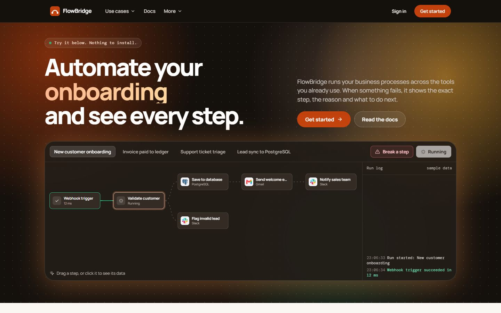
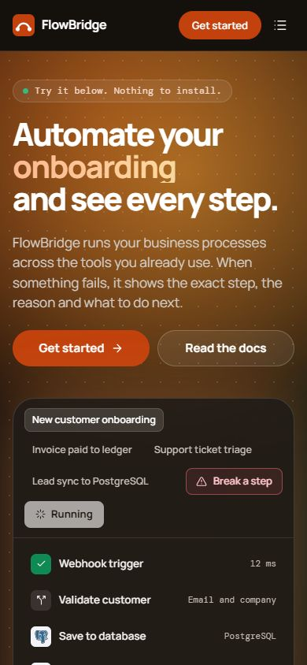
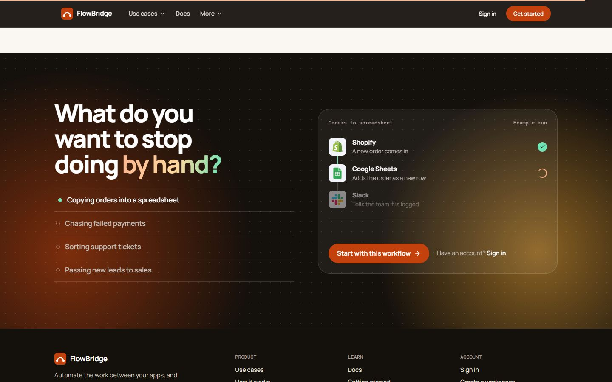
Open live pagePlain charcoal with a faint square grid that fades out, and one soft glow at the top. Calm and technical, like a canvas.
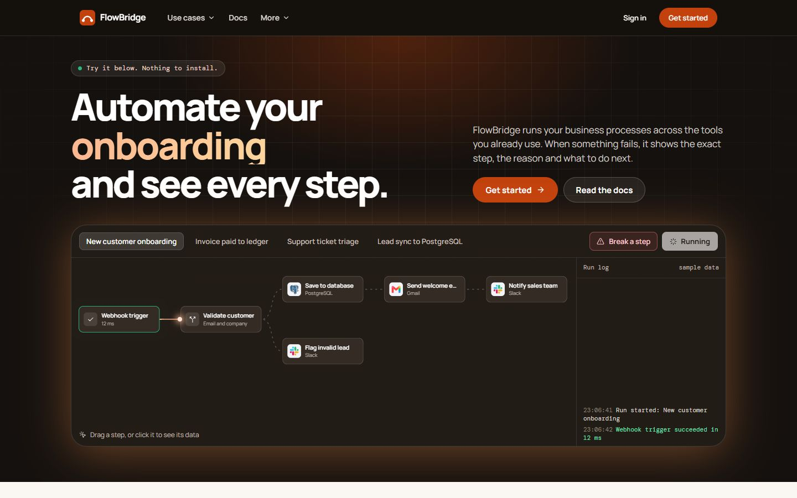
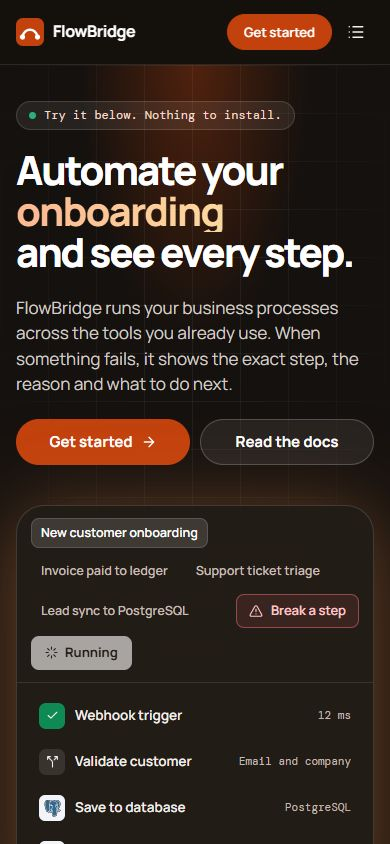
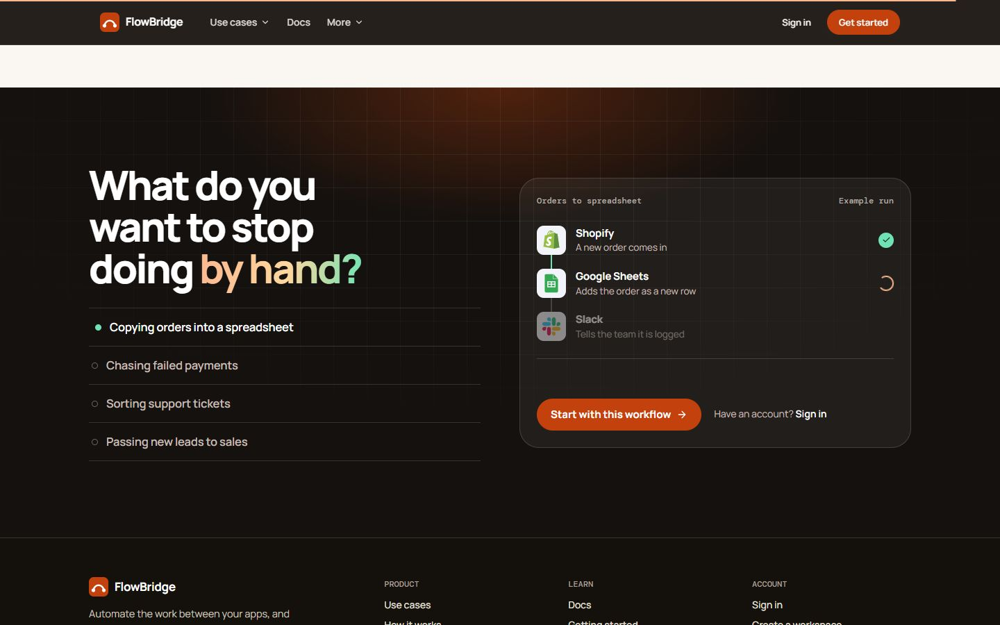
Open live pageDark at the top, warming to a low orange horizon behind the demo. One clean light source instead of several glows.
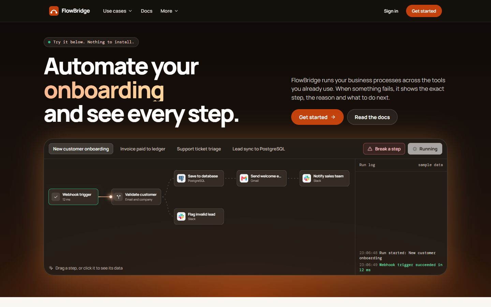
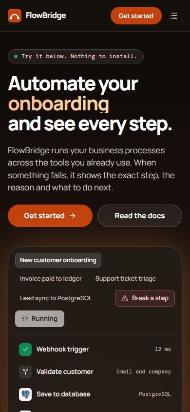
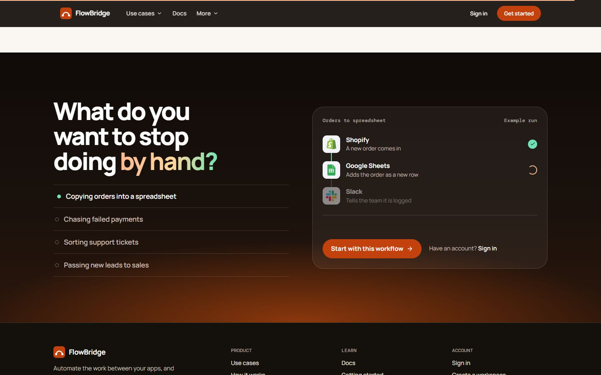
Open live pageA light warm hero with dark text and orange accents. The demo stays dark, so it stands out as the focus.
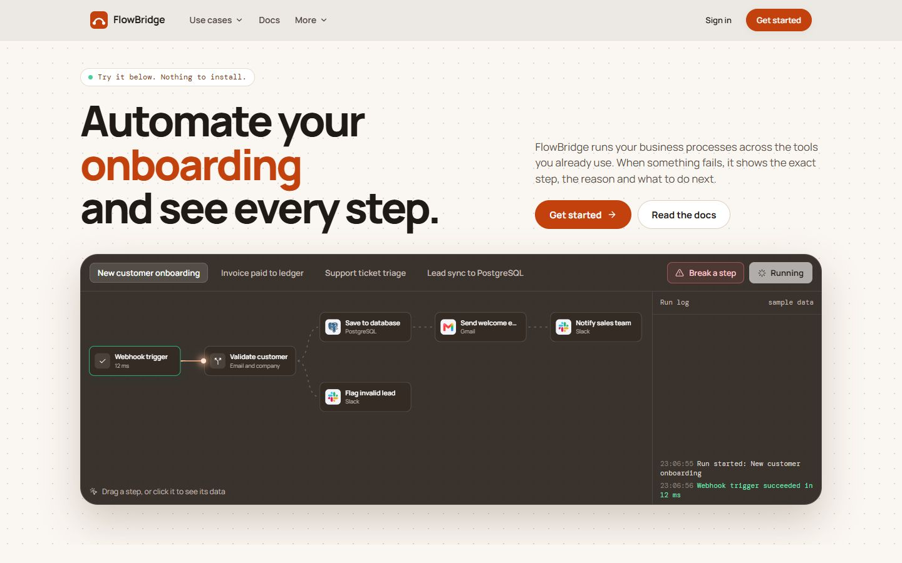
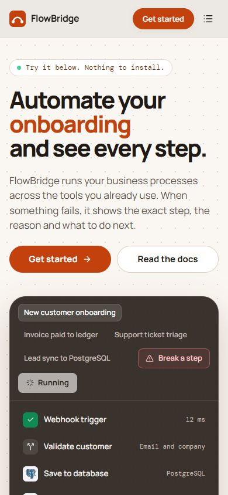
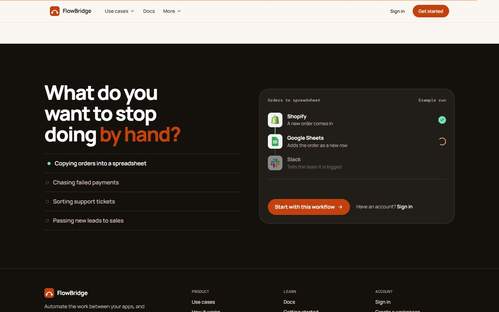
Open live pageCharcoal with a few thin orange connection lines and step dots running behind the content. It hints at workflows without shouting.
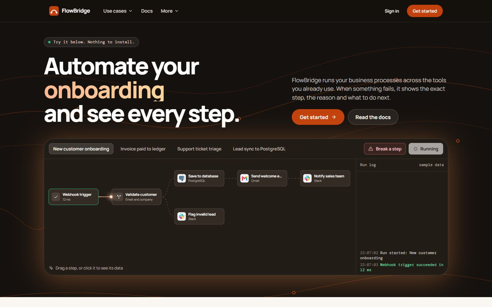
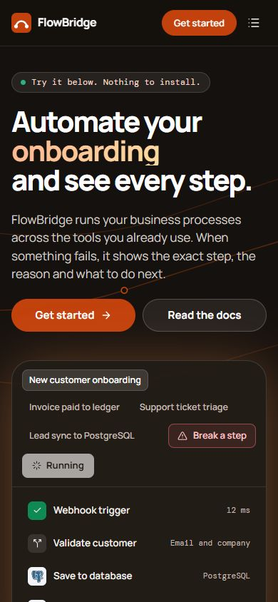
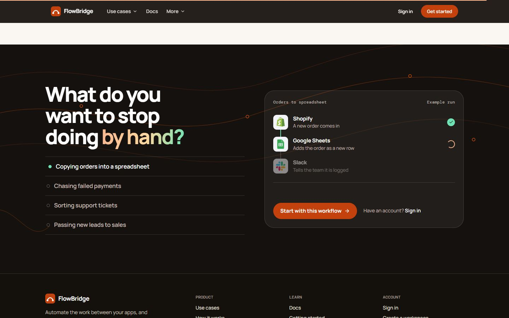
Open live pageMatte charcoal with a fine film grain, and a soft orange light that follows the mouse. Tactile and quiet at rest.
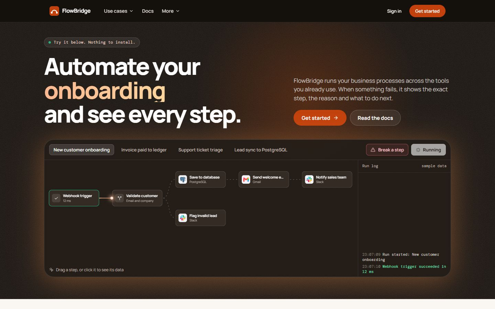
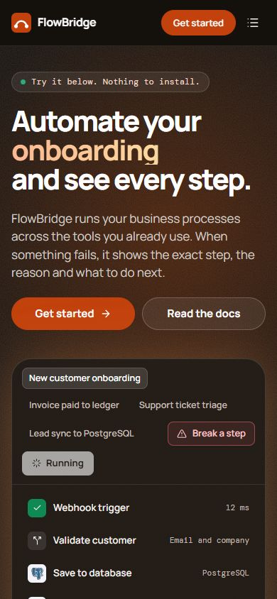
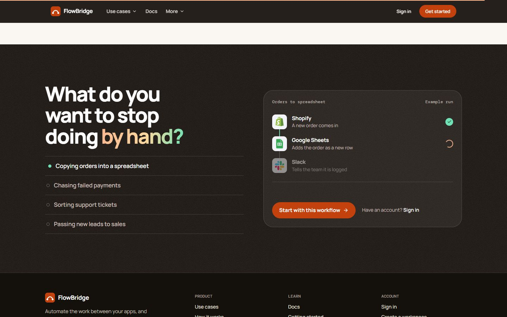
Open live page